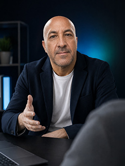
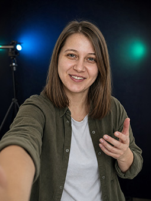
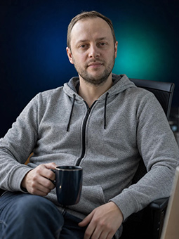

Domov / O nás
noGrey nie je len meno – je to sľub. Žiadny priemer, žiadne weby, za ktoré sa klient hanbí. Od roku 2010 sme ho splnili viac ako 200-krát.
Keď sme začínali, weby sa ešte stavali pre počítače a mobil bol bonus. Odvtedy sa zmenilo všetko – technológie, dizajn, správanie zákazníkov aj nástroje. Nezmenilo sa jedno: firmy potrebujú web, ktorý ich predáva, a partnera, ktorý nezmizne.
Prežili sme šestnásť rokov v biznise, kde agentúry vznikajú a zanikajú každý rok. Nie preto, že sme najlacnejší alebo najväčší – ale preto, že naši klienti sa vracajú a odporúčajú nás ďalej. Dukla Trenčín, Mercedes-Benz, Eurotip, desiatky menších firiem – všetci začali jedným rozhovorom.
Dnes staviame weby s pomocou umelej inteligencie – rýchlejšie a dostupnejšie než kedykoľvek predtým. Ale rozhodnutia, vkus a zodpovednosť zostávajú na ľuďoch. Tak to u nás bolo v roku 2010 a tak to zostane.

Radšej narovinu, aj keď to bolí.
Jedno slovo naviac dokáže zabiť dobrú vetu.

Trendy sledujem, aby som ich predbehla.

Funguje. Zvyšok je detail.
Dobrý dizajn si nikto nevšimne, kým nezmizne.
Povieme vám aj to, čo nechcete počuť – že niečo nepotrebujete, že sa niečo neoplatí. Radšej prídeme o zákazku ako o dôveru.
Keď zavoláte, dvíhame. Keď niečo horí, riešime. Sme z Trenčína a správame sa tak – po susedsky, nie korporátne.
Web musí byť pekný, ale hlavne musí fungovať: rýchlo sa načítať, dať sa nájsť, predávať. Detaily, ktoré nevidno, robia rozdiel.
Šedá je farba priemeru. Šedý je web, ktorý nikoho nezaujme, firma, ktorá splýva s konkurenciou, prezentácia, ktorú si nikto nezapamätá. Keď sme v roku 2010 vyberali meno, chceli sme, aby v sebe nieslo záväzok.
noGrey znamená: žiadny priemer. Každý web, ktorý od nás odíde, musí mať charakter – farbu v tom najširšom zmysle slova. Ak hľadáte web „taký normálny, ako majú všetci", úprimne – nie sme pre vás. Ak chcete vyčnievať, ste tu správne.
Buď taký, ktorý sa bude prizerať, ako zákazníci odchádzajú ku konkurencii. Alebo taký, ktorý ich privedie k vám. Prvý krok: káva, rozhovor, nezáväzná konzultácia.
Poďme sa porozprávať